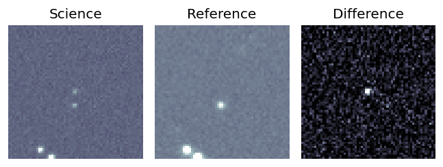
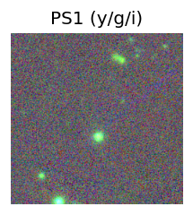
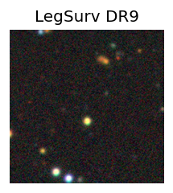
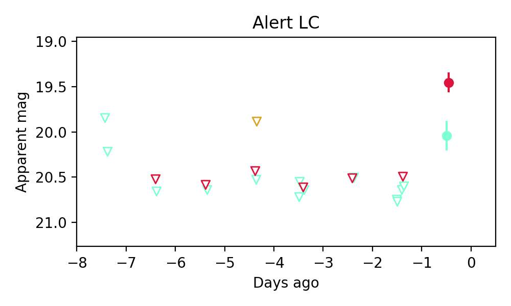

Candidate List 20190902Previous Day Next Day
Section 1: New Sources (age<1d) Section 2: Old (1-5d) sources observed last nightplaceholder
Section 1: New Afterglow/FBOT Cands Last Night (1)
1. ZTF19abvizsw (Afterglow?FBOT?) (TNS: A) [Back to Top] [Share] [Trigger Swift] [Fritz] [Lasair]RA, Dec: 279.47286, 61.49799 18h37m53.49s, 61d29m52.77sGalactic (l, b): 91.16476, 25.20174 ext(g-r) = 0.047
PS1: 0 sources in 3 arcsec
LegacySurvey: 1 sources in 3 arcsec Closest: d = 0.38 arcsec, 110.4 deg (east of north) photoz=1.04 (68% bounds 0.79, 1.23), type=REX peak abs mag = -24.82 (68% bounds -24.09, -25.27)

Extinction-corrected gr color:
From alerts: 0.54 +/- 0.2 mag
Consistent with synchrotron, g-r>0!
Rise Rate:
g: 0.72 mag/day
r: 1.11 mag/day
i: -99 mag/day
Fade Rate:
g: -99 mag/day
r: -99 mag/day
i: -99 mag/day